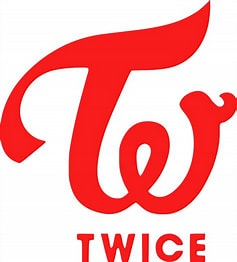
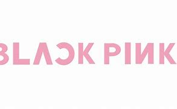

Historia Twice
Finalizado el programa, la compañía anunció el debut de Twice para octubre de 2015 con el EP The Story Begins. Este fue lanzado el 20 de octubre, junto al vídeo musical del tema principal, Like OOH-AHH; actualmente este ha superado los 300 millones de reproducciones en YouTube. El mini-album incluyó los éxitos: Truth, Candy Boy y Like a Fool, temas que fueron presentados en los diversos shows musicales como M! Countdown, Show Music Core, Music Bank e Inkigayo. Posteriormente el grupo se enfocó en las actividades promocionales del mini-album, apareciendo en diversos programas de variedades como Weekly idol y After School Club.
Poco tiempo después de su lanzamiento, el mini-album se posicionó en las listas musicales nacionales como Melon, Gaon, y Bugs, además entró en el World Albums de Billboard en el puesto 15 y debutó en el top Billboard Japan Hot 100 en el puesto 89. El éxito de este primer álbum fue superado por el lanzamiento del sencillo Cheer Up, incluido en el segundo mini-álbum del grupo, Page Two (2016). Este popular trabajo discográfico fue lanzado en dos versiones (Pink Ver y Mint Ver), las cuales incluían siete canciones. Tras ser reveladas varias imágenes promocionales y teasers, fue lanzando el mini-álbum y el vídeo oficial del tema principal, Cheer U, el cual actualmente cuenta con más de 333 millones de reproducciones en YouTube.
Historia Black Pink
En 2016, Blackpink surgió gracias a la compañía discográfica YG Entertainment, dando a conocer la existencia de un nuevo grupo, creando expectativa en los internautas.
Semana por semana fueron revelando una fotografía cada integrante. Después de revelar las fotos individuales, el 29 de junio de ese año, mostró al grupo completo, anunciando de manera oficial la existencia de Blackpink.
Historia NewJeans
El 12 de noviembre de 2021 se informó que ADOR, subsidaria de HYBE, estaría debutando un grupo femenino el proximo año. Las miembros de este serían aprendices reclutadas mediante la audición global realizada entre HYBE y Source Music en 2019.
2022: Debut con su Primer Mini Álbum "New Jeans"
El 22 de julio fue el lanzamiento repentino del vídeo musical de "Attention", lo que salió de la ruta habitual para los artistas de K-Pop al omitir el proceso de lanzar teasers antes de que se hiciera público. La información esencial del grupo, como el nombre, la alineación y la información de debut, se había mantenido en secreto. El vídeo para "Attention" fue filmado en España y muestra la historia de las adolescentes y el vínculo que formaron. Se ve a las cinco miembros de NewJeans deambulando por las calles mientras exhiben su coreografía sobre un gran campo verde.
Su álbum debut incluye cuatro pistas: "Attention", "Hype Boy", "Cookie" y "Hurt", de las cuales tres pistas serán las canciones principales. Todas las canciones del álbum debut tienen vídeos musicales adjuntos. El ábum se lanzaría digitalmente el 1 de agosto y de forma física el 8 de agosto.
Canciones más famosas de Twice

- TT
- What Is Love?
- Likey
- Cheer Up
- Fancy
Canciones más famosas de blackpink

- Boombayah
- Playing With Fire
- Sour Candy
- Ddu-du Ddu-du
- Lovesick Girls
- Kill This Love
- How You Like That
- Don’t Know What To Do
Canciones más famosas de NewJeans
- OMG
- Ditto
- Hype Boy
- Attention
- Cookie